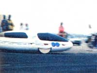
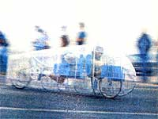
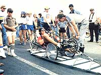
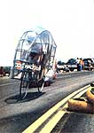

Photos by Bob Keim
As we've noted in this magazine before, a bicycle is about the most efficient transportation device yet developed. With its light weight and its highly effective roller chain-and-sprocket drive system, the two-wheeled conveyance is about five times more energy-thrifty-when distance and weight are taken into account-than is either an unaided human or an automobile.
It should come as no surprise, then, that a lot of folks would like to put this potential fuel-saver into proper perspective in our energy-scarce world. Of course, in many countries, the bicycle already plays as important (or more so!) a transportation role as does the motorized vehicle ...but in North America it's generally been relegated to sporting or pleasure status. The International Human Power Vehicle Association, however, hopes to change all that. This Claremont, California-based group-founded, in 1974, by bike-racing enthusiasts who were interested in expanding the frontiers of vehicle design-has sponsored annual speed championships since its inception, and, as a result of the competitions, a new sort of machine has emerged which just might be the forerunner of a swift, practical humanpowered commuter vehicle!
This year's IHPVA competition included several events in two categories-single-and multiple-rider vehicles-and contestants challenged each other for a total of $5,000 in cash prizes. In the first event, the 200-meter time trials, entrants competed to achieve the greatest possible velocity over a flat 656-foot stretch (the machines used an acceleration runway to build up speed before their run was recorded). The second contest was an 18-mile road race designed to test the maneuverability and road-handling capability of the pedal-powered vehicles. And the speeds recorded in both events were impressive ...averaging about 32 miles per hour for the distance race, and peaking at close to 60 MPH in the sprints.
In order to achieve such speeds, HPV builders must concentrate primarily upon aerodynamic design, though rider position does come into play, too. For example, at 30 miles per hour, 90% of the energy expended by the rider of a conventional bicycle is wasted trying to overcome wind resistance ...and even more may be lost because the standard seating position doesn't allow for maximum pedal pressure. To decrease such inefficiency, the more radical human-powered vehicles use tubular alloy frames surrounded by airfoil shaped Hexcel fiberglass shells (or, alternatively, load bearing-and"slippery"composite-construction bodies with small tubular subframes at stress points), and place the rider in a supine (reclining on the back) or prone (on the stomach) posture for maximum comfort and pedaling power. Of course, some of the HPV designers practice "middle ground" technology ...placing lightweight fairings over slightly modified ten-speed bike frames
At any rate, it's clear that a number of changes are in store for the bicycle over the next few years, though today's racing HPV's certainly aren't ready to hit the streets-commercially-as yet. Nevertheless, any vehicle that uses only 1/4 horsepower to move rapidly down the highway deserves a lot of attention ...and we hope these little energy-savers get plenty of it as time goes on!
EDITOR'S NOTE: MOTHER's Experimental Vehicle Newsletter is available for one year (six issues) at a special charter rate of $15. Please send your name and address, with your payment, to Experimental Vehicle Newsletter, P.O. Box 70, Hendersonville, North Carolina 28791.
|
 The radical Cal-Poly/ A.S.M.E. Phoenix features an aerodynamically favorable composite body (with a tubular substructure) ...minimal ,ground clearance ...and atop speed near the ""double nickel"". |
 Greg Johnson's SO-MPH machine relies on a lightweight, fish-shaped fairing and ""prone power"" to cut down on aerodynamic drag. |
 Most HPV frames are ultralight and just strong enough to serve their purpose. Notice the speed-inducing""stiff"" gearing ratio shown here. |
|
 Some entrants merely adapted wind-cutting fairings to modified bicycle frames. This tandem is capable of traveling at over 43 miles per hour. |
|
|